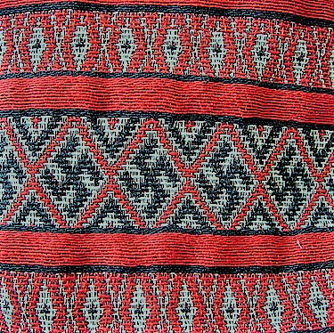

圖騰冊集

在祭典當中，賽夏族人盛裝的服飾上，有許多美麗的織紋圖騰。例如：卐字形紋，『卐』像是大自然的天候現象『閃電』，相傳在過去有一位雷神非常照顧賽夏族人，在凡間的時候，幫助賽夏族人耕種，日復一日，賽夏族人越來越懶惰，有一天雷神從田裡回到家後，肚子非常的餓，就請人去煮飯，但是煮飯的人卻懶得煮，把鍋灰拿給雷神吃，雷神終於受不了了，憤怒的回到天上，賽夏族人這才驚覺自己犯下大錯，於是將類似『閃電』的圖紋織在服飾上，來紀念雷神並且約束自己的行為，提醒自己要勤勞不要懶惰，不然會再次發生同樣的事情。